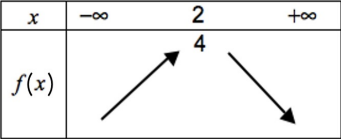
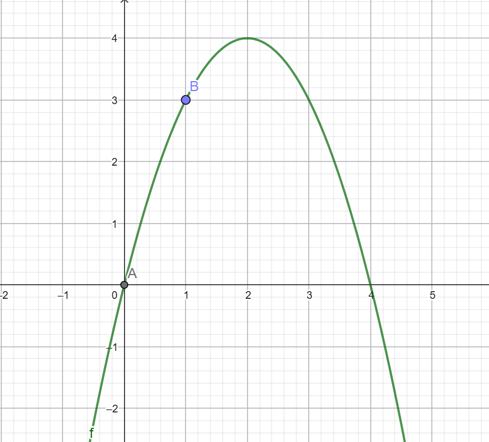
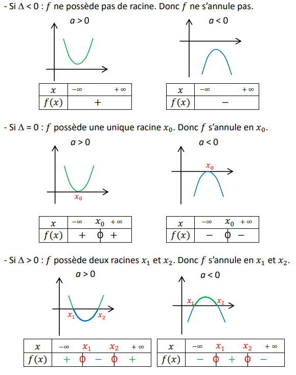
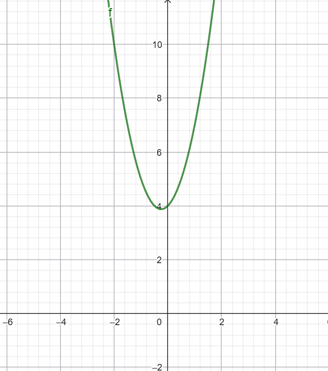

Un outil pour les équations du second degré est disponible ici.
Chapitre 1 - Fonction polynôme de degré 2
I - Définition
Définition : Fonction polynôme du second degré
On appelle fonction polynôme du second degré toute fonction \(f\) définie sur ℝ par une expression de la forme :
\(f(x)=ax^2+bx+c\)
où les coefficients \(a\), \(b\) et \(c\) sont des réels donnés avec \(a≠0\).
Remarque : Une fonction polynôme de degré 2 est aussi appelée fonction trinôme du second degré.
Exemple : La fonction définie sur ℝ par \(f (x)=3 x^2-2 x+1\) est une fonction polynôme du second degré. On a \(a=3\), \(b=-2\), \(c=1\).
II - Forme canonique
Soit \(f\) une fonction polynôme du degré 2 définie sur ℝ par \(f (x)=ax^2+bx+c\).
Il existe deux nombres réels α et β tels que, pour tout réel \(x\), \(f (x)=a(x-α)^2+β\).
Cette écriture est la forme canonique de \(f\).
\(f(x)=ax^2+bx+c\)
\(=a\left[x^2+\frac{b}{a}x\right]+c\)
\(=a\left[x^2+\frac{b}{a}x+\left(\frac{b}{2a}\right)^2-\left(\frac{b}{2a}\right)^2\right]+c\)
\(=a\left[\left(x+\frac{b}{2a}\right)^2-\left(\frac{b}{2a}\right)^2\right]+c\)
\(=a\left(x+\frac{b}{2a}\right)^2-a\frac{b^2}{4a^2}+c\)
\(=a\left(x+\frac{b}{2a}\right)^2-\frac{b^2}{4a}+c\)
\(=a\left(x+\frac{b}{2a}\right)^2-\frac{b^2-4ac}{4a}\)
\(=a(x-\alpha)^2+\beta\)
avec :
\(\alpha=-\frac{b}{2a}\)
\(\beta=-\frac{b^2-4ac}{4a}\)
Méthode : Ecrire la forme factorisée de \(f(x)=2x^2-20x+10\).
\(f(x)=2x^2-20x+10\)
\(=2[x^2-10x+10]\)
\(=2[x^2-10x+25-25]+10\) ← car \(x^2-10x\) est le début du développement de \((x-5)^2\) et \((x-5)^2=x^2-10x+25\)
\(=2[(x-5)^2-25]+10\)
\(=2(x-5)^2-50+10\)
\(=2(x-5)^2-40\)
\(f(x)=2(x-5)^2-40\) est la forme canonique de \(f\).
III - Sens de variation, extrémum et représentation graphique
1) Variation propriété : Sens de variation et représentation graphique
Si a > 0 : \(f\) est strictement décroissante sur ]−∞;α] et strictement croissante sur [α;+∞[. \(f\) admet un minimum β en α. |
Si a < 0 : \(f\) est strictement croissante sur ]−∞;α] et strictement décroissante sur [α;+∞[. \(f\) admet un maximum β en α. |
2) Extrémum
On a : \(2(x-1)^2≥0\)
Donc : \(2(x-1)^2+3≥3\)
Soit : \(f(x)≥3\).
Or : \(f(1)=3\) donc pour tout \(x\), \(f(x)≥f(1)\).
\(f\) admet donc un minimum en 1. Ce minimum est égal à 3.
Propriété : Soit \(f\) une fonction polynôme du second degré définie par \(f(x)=a(x-α)^2+β,\) avec \(a \neq 0\).
- Si a>0, \(f\) admet un minimum pour \(x=α\). Ce minimum est égal à β.
- Si a<0, \(f\) admet un maximum pour \(x=α\). Ce maximum est égal à β.
Propriété : Pour \(f(x)=ax^2+bx+c\) avec \(a \neq 0\), on a \(α=\frac {b}{2a}\) et \(β=f(\frac {-b}{2a})\)
Si a > 0 : |
Si a < 0 : |
Définition : Parabole et son sommet
La représentation graphique d'une fonction polynôme f du second degré s'appelle une parabole. Le point de coordonnées (α ; β) s'appelle le sommet de la parabole. Il correspond à l'extremum de la fonction f.
Propriété : La parabole admet pour axe de symétrie la droite d'équation \(x=α\).
Méthode : Déterminer les caractéristiques d'une parabole
Soit la fonction polynôme du second degré défini par \(f(x)=2x^2-12x+1\). Déterminer le sommet de la parabole de f et son axe de symétrie.- Les coordonnées du sommet de la parabole sont (α ; β), avec :
\(α=\frac {-b}{2a}=\frac{-(-12)}{2\times 2}=3\)
\(β=f(\frac {-b}{2a})=f(3)+2\times 3^2-12\times 3+1=-17\)
Le point de coordonnées (3 ; -17) est donc le sommet de la parabole.
Remarque : Comme \(a=2>0\), ce sommet correspond à un minimum.
- La parabole possède un axe de symétrie d'équation \(x=\frac {-b}{2a}\), soit x=3.
La droite d'équation x=3 est donc axe de symétrie de la parabole.

3) Représentation graphique
Méthode : Représenter graphiquement une fonction polynôme du second degré
Représenter graphiquement la fonction polynôme f du second degré définie sur ℝ par \(f(x)=-x^2+4x\).
\(f(x)=-x^2+4x\)
\(=-(x^2-4x)\)
\(=-(x^2-4x+4-4)\)
\(=-((x-2)^2-4)\)
\(=-(x-2)^2+4\)
f admet donc un maximum en α=2 égal à β=4.
Remarque : On peut aussi appliquer les formules \(α=\frac {-b}{2a}\) et \(β=f(\frac {-b}{2a})\)
Les variations de f sont donc données dans le tableau suivant :

Pour représenter graphiquement la fonction f, on calcule les coordonnées de quelques points appartenant à la courbe :
\(f(1)=-(1)^2+4\times 1=-1+4=3\)
On obtient d'autres points par symétrie par rapport à la droite d'équation x=2.
On trace la courbe représentative de f ci-contre.

IV - Equations du second degré
1) Définitions
Définition : Une équation du second degré à coefficients réels est une équation de la forme \(ax^2+bx+c=0\), avec \(a\), \(b\), \(c\) trois réels tels que \(a \neq 0\).
Définition : Racines
Les solutions de l'équation du second degré \(ax^2+bx+c=0\), sont appelées les racines du trinôme \(ax^2+bx+c\).
Exemples :
- \(x^2+9x+7=0\) est une équation avec \(a=1\), \(b=9\), \(c=7\).
- \(x^2-2=6\) est une équation avec \(a=1\), \(b=0\), \(c=-8\).
2) Résolution dans ℝ
Définition : Discriminant
Le nombre \(b^2-4ac\) est appelé le discriminant du trinôme \(ax^2+bx+c\). Il est noté \(\Delta\).
Propriété : Soit \(\Delta\) le discriminant du trinôme \(ax^2+bx+c\).
- Si \(\Delta < 0\) : L'équation \(ax^2+bx+c=0\) n'a pas de solution réelle.
- Si \(\Delta = 0\) : L'équation \(ax^2+bx+c=0\) a une unique solution : \(x_0=\frac{-b}{2a}\)
- Si \(\Delta > 0\) : L'équation \(ax^2+bx+c=0\) a deux solutions distinctes :
\(x_1=\frac{-b-\sqrt{a}}{2a}\) et \(x_2=\frac{-b+\sqrt{a}}{2a}\)
\(f(x)=ax^2+bx+c\) peut s'écrire sous forme canonique : \(f(x)=a(x-α)^2+β\).
On sait que \(α=\frac{-b}{2a}\) et \(β=-\frac{b^2-4ac}{4a}\)
\(f(x)=a(x+\frac{b}{2a})^2-\frac{\Delta}{4a}=0\)
\(f(x)=a(x+\frac{b}{2a})^2=\frac{\Delta}{4a}\)
\(f(x)=(x+\frac{b}{2a})^2=\frac{\Delta}{4a^2}\)
- Si \(\Delta < 0\) : Impossible, un carré n'est jamais négatif (dans ℝ)
- Si \(\Delta = 0\) : \((x+\frac{b}{2a})^2 = 0\) alors \(x=\frac {-b}{2a}\).
- Si \(\Delta > 0\) :
\((x+\frac{b}{2a})^2 = \frac{\Delta}{4a^2}\)
\(x+\frac{b}{2a} = \sqrt{\frac{\Delta}{4a^2}}\)
\(x= \frac{\sqrt{\Delta}}{2a}-\frac{b}{2a}=\frac{-b+\sqrt{\Delta}}{2a}=x_1\)
ou \(x=\frac{-b-\sqrt{\Delta}}{2a}=x_2\)
Méthode : Résoudre une équation du second degré.
Résoudre les équations suivantes :
- a) \(2x^2-x-6=0\)
\({\Delta}=b^2-4ac\)
\(=(-1)^2-4\times 2\times(-6)\)
\(=1+48\)
\(=49>0\) donc deux racines réelles
- \(x_1=\frac{-b-\sqrt{a}}{2a}\)
\(=\frac{1-7}{4}=-\frac{3}{2}\) - \(x_2=\frac{-b+\sqrt{a}}{2a}\)
\(=\frac{1+7}{4}=2\)
- \(x_1=\frac{-b-\sqrt{a}}{2a}\)
-
b) \(2x^2-3x+\frac{9}{8}=0\)
\({\Delta}=b^2-4ac\)
\(=(-3)^2-4\times 2\times \frac{9}{8}\)
\(=9-8\times \frac{9}{8}\)
\(=9-9=0\) donc une seule racine (racine double)
- \(x_0=\frac{-b}{2a}\)
\(=\frac{3}{4}\)
- \(x_0=\frac{-b}{2a}\)
-
c) \(x^2+3x+10=0\)
\({\Delta}=b^2-4ac\)
\(=3^2-4\times 1\times 10\)
\(=9-40\)
\(=-31<0\) donc il n'y a pas de solution réelle.
V - Propriétés d'un trinôme
Somme et produit de racines
Propriété : Soit \(f\) une fonction polynôme de degré 2 définie par \(f (x)=ax^2+bx+c\) dont le discriminant est strictement positif.
\(f\) a alors 2 racines distinctes \(x_1\) et \(x_2\) et on a \(x_1+x_2=\frac {-b}{a}\) et \(x_1\times x_2=\frac {c}{a}\).
Méthode : Utiliser les formules de somme et produit de racines
Soit \(f\) la fonction polynôme du second degré définie sur ℝ par : \(f(x)=-2x^2+x+1\).
1) Montrer que \(x_1=1\) est une racine de \(f\).
\(f(1)=-2\times 1^2+1+1\)
\(=-2+2=0\)
donc 1 est une racine.
2) Déterminer la deuxième racine.
\(1+x_2=\frac{-1}{-2}=\frac{1}{2}\)
\(x_2=\frac{1}{2}-1=-\frac{1}{2}\) donc \(x_2=-\frac{1}{2}\).
2) Factorisation
Propriété : Soit \(f\) une fonction polynôme du second degré définie sur ℝ par : \(f(x)=ax^2+bx+c\).
- Si \(\Delta = 0\) : \(f(x)=a(x-x_0)^2\), avec \(x_0\) racine de \(f\).
- Si \(\Delta > 0\) : \(f(x)=a(x-x_1)(x-x_2)\), avec \(x_1\) et \(x_2\) racines de \(f\).
- Si \(\Delta < 0\) : on ne peut pas écrire \(f(x)\) comme un produit de polynômes de degré 1.
Méthode : factoriser un trinôme
a) \(4x^2+19x-5\)
\(\Delta =b^2-4ac\)
\(=19^2-4\times 4\times (-5)\)
\(=441>0\) donc 2 racines réelles
\(x_1=\frac{-19-\sqrt{441}}{8}=\frac{1}{4}\)
\(x_2=\frac{-19+\sqrt{441}}{8}=-5\)
\(f(x)=4(x-\frac{1}{4})(x+5)\)
b) \(9x^2-6x+1\)
\(\Delta =b^2-4ac\)
\(=(-6)^2-4\times 9\times 1\)
\(=36-36=0\) donc 1 racine réelle
\(x_0=\frac{-b}{2a}\)
\(=\frac{6}{2\times 9}=\frac{6}{18}=\frac{1}{3}\)
\(f(x)=9(x-\frac{1}{3})(x-\frac{1}{3})\)
\(=9(x-\frac{1}{3})^2\)
3) Signe
Propriété : Propriété : Soit \(f\) une fonction polynôme du second degré définie sur ℝ par : \(f(x)=ax^2+bx+c\).

"Le signe à l'extérieur des racines"
Méthode : Démontrer que la fonction polynôme \(f\) du second degré définie sur ℝ par : \(f(x)=2x^2+x+4\) est positive.
\(\Delta =b^2-4ac\)
\(=1^2-4\times 2\times 4\)
\(=1-32\)
\(=-31<0\) donc pas de racine réelle.
\(a=2>0\)
\[ \begin{array}{c|cc} x & -\infty & +\infty \\ \hline f(x) & + & + \end{array} \]

Méthode : Résoudre une inéquation du second degré
Résoudre les inéquations :
a) \(x^2-2x-15<0\)
\(\Delta=b^2-4ac\)
\(=(-2)^2-4\times 1\times (-15)\)
\(=4+60\)
\(=60>0\) donc 2 racines réelles
\(x_1=\frac{-b-\sqrt{a}}{2a}\)
\(=\frac{2-\sqrt{64}}{2}=-3\)
\(x_2=\frac{-b+\sqrt{a}}{2a}\)
\(=\frac{2+\sqrt{64}}{2}=5\)
\(f(x)=a(x-x_1)(x-x_2)\)
\(=(x+3)(x-5)\)
\[ \begin{array}{c|ccccc} x & -\infty & -3 & & 5 & +\infty \\ \hline x+3 & - & 0 & + & + & + \\ \hline x-5 & - & - & - & 0 & + \\ \hline f(x) & + & 0 & - & 0 & + \end{array} \]
\(f(x)<0\) quand x ∈ \(]-3;5[\)
b) \(x^2+3x-5<-x+2\)
\(\Leftrightarrow x^2+3x-5+x-2<0\)
\(\Leftrightarrow x^2+4x-7<0\)
\(\Delta=b^2-4ac\)
\(=4^2-4\times 1\times (-7)\)
\(=16+28\)
\(=44>0\) donc 2 racines réelles
\(x_1=\frac{-b-\sqrt{a}}{2a}\)
\(=-2-\sqrt{11}\)
\(x_2=\frac{-b+\sqrt{a}}{2a}\)
\(=-2+\sqrt{11}\)
\[ \begin{array}{c|ccccc} x & -\infty & x_1 & & x_2 & +\infty \\ \hline x^2+4x-7 & + & 0 & - & 0 & + \end{array} \]
\(f(x)=<0\) quand x ∈ \(]-2-\sqrt{11};-2+\sqrt{11}[\)
Méthode : Etudier la position de deux courbes
Soient \(f\) et \(g\) deux fonctions définies sur ℝ par \(f(x)=-x^2+8x-11\) et \(g(x)=x-1\).
Etudier la position relative des courbes représentatives \(C_f\) et \(C_g\).
\(f(x)-g(x)=-x^2+8x-11-x+1\)
\(=-x^2+7x-10\)
\(\Delta=b^2-4ac\)
\(=7^2-4\times 1\times (-10)\)
\(=49-40\)
\(=9>0\) donc 2 racines réelles
\(x_1=\frac{-7-3}{-2}=\frac{-10}{-2}=5\)
\(x_2=\frac{-7+3}{-2}=\frac{-4}{-2}=2\)
a=-1, donc signe "-" à l'extérieur des racines.
\[
\begin{array}{c|ccccc}
x & -\infty & 2 & & 5 & +\infty \\
\hline
f(x)-g(x) & - & 0 & + & 0 & -
\end{array}
\]
Conclusion :
- Sur \([2;5]\), \(f\) est au dessus de \(g\).
- Sur \(]-\infty;2]∪[5;+\infty[\), \(g\) est au dessus de \(f\).